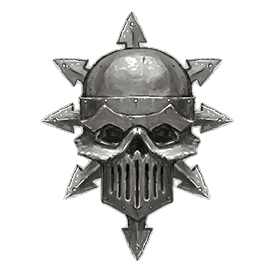

Battle of Tallarn
| Battle of Tallarn | |
|---|---|
| Part of the Horus Heresy | |
 Imperial and Iron Warriors armour engaged on the poisoned plains of Tallarn Artwork © Games Workshop | |
| Date | 010–012.M31[a] |
| Location | Tallarn, Segmentum Tempestus |
| Result | Loyalist victory. Iron Warriors withdraw on the Warmaster's order; Tallarn's biosphere destroyed and the world turned to desert |
| Belligerents | |
| Loyalists | Traitors  Iron Warriors |
| Commanders and leaders | |
| Perturabo[h]Koparnos[i] | |
| Strength | |
| 1,000+ Iron Warriors warships | |
| Casualties and losses | |
| c. 1,000–5,000 Astartes killed[l] | |
| Most of Tallarn's population killed[m] | |
The Battle of Tallarn was a campaign of the Horus Heresy, fought in 010–012.M31 on the world of Tallarn in the Segmentum Tempestus. The Iron Warriors under their primarch Perturabo struck the planet without warning, an Imperial muster world of great size and importance, and destroyed its biosphere with a viral bombardment. The survivors held out in deep shelters, and loyal and traitor armies poured onto the dead world in turn. Because no one could survive in the open air, the war was fought almost entirely in sealed armoured vehicles. It became the largest tank battle in human history.[2][1]
The campaign lasted more than a standard year. It drew in forces from hundreds of worlds across the segmentum and ended with the withdrawal of the Iron Warriors, after the Warmaster Horus ordered Perturabo to abandon it. More than a million wrecked vehicles were left on the sands. The reason for the attack, which seemed to gain the traitors nothing, was not understood at the time. Later investigation suggested that Perturabo had sought something buried beneath the planet. The poisoned world became a desert, and its survivors became the Tallarn Desert Raiders of the Astra Militarum.[2][3]
Background
[edit]Tallarn before the war
[edit]Tallarn was settled in the 29th millennium and was in the Great Crusade a fertile and populous world. It served as a muster point for the Imperial Army, a staging ground where regiments assembled before being sent to the crusade fleets. Its people had built extensive underground shelters, enviro-bunkers in which a large part of the population could live for long periods.[1][3]
Perturabo's arrival
[edit]After the destruction of the crone world of Iydris in about 007.M31,[n] where he had fought beside the newly ascended Fulgrim, Perturabo led the Iron Warriors fleet into a Warp passage that brought it out far across the galaxy, near Tallarn. Imperial records hold that the Lord of Iron chose the world as his next target there. The Iron Warriors arrived with a fleet of more than a thousand ships.[2][4]
Course of the battle
[edit]The bombardment
[edit]The Iron Warriors did not offer terms. Their fleet came out of the Warp and released a storm of virus bombs over the whole planet. The plague was engineered to consume all organic life. Within the hour Tallarn's biosphere was dead. Forests, crops, animals and even bacteria perished, and banks of caustic fog rolled over the surface. Those of Tallarn's people who reached the bunkers survived. Those who did not, by far the greater number, died where they stood.[1][3]
When the shelters opened after some seven weeks, the survivors found a world covered in a slime of dead plants and bodies that could not rot, since nothing was left alive to decompose them. The residue of the virus made the open air lethal for years afterwards.[1]

Landing and the first battles
[edit]Iron Warriors landings followed the bombardment. The Imperial forces in the bunkers emerged to meet them in armoured vehicles and sealed Titans, the only way to fight on the surface. The first battles were fought by the garrison and the regiments that had been mustering on the world. The Titan Legions Astorum and Gryphonicus fought on the side of the defenders. The Iron Warriors' armoured columns suffered heavily in these early engagements. One Iron Warriors commander, Warsmith Koparnos, lost most of his command and held out for six days, alone, in the immobilised wreck of his vehicle.[4][1]
Escalation
[edit]The battle did not stay small. Word of the attack reached loyal commands across the segmentum, and fleets brought reinforcements to Tallarn. The traitors sent their own. Within months both sides had committed whole armies to the dead world, and neither was willing to concede it. Imperial chroniclers later observed that had the loyal commanders known how little was left on Tallarn to fight for, they might have abandoned it. Once their armies were in motion, there was no turning back.[1]
The war was fought by tanks, super-heavy vehicles, Dreadnoughts and Titans across plains of poisoned slime that became, as the months passed, plains of sterile dust. Infantry could not leave their transports. Battles were fought by formations of hundreds or thousands of vehicles. Imperial estimates of the total committed range from more than a million to ten million vehicles, the largest armoured war ever recorded.[1][3]
Other Legions
[edit]The Iron Hands took part on the loyal side, as did a detachment of White Scars. At least one legionary of the Imperial Fists, who had been on the world when the virus fell, survived in the bunkers and helped send word of the attack off-world. The Alpha Legion also intervened, attacking the Iron Warriors for purposes of their own. Imperial records of the Alpha Legion's role are fragmentary, and a later Officio Militaris account holds that the XX Legion also defeated a White Scars force on Tallarn.[1][3]
Withdrawal of the Iron Warriors
[edit]As the war ground on without decision, Horus summoned Perturabo. The Warmaster ordered his brother to kneel before him and then to withdraw from the Tallarn campaign, since he needed the IV Legion for the war against Terra. Perturabo obeyed. The Iron Warriors left the planet, and the traitor forces they left behind were destroyed or driven off over the following months.[2][4]
The purpose of the attack
[edit]At the time the attack seemed senseless. The traitors had spent vast resources on a world they had themselves made worthless. Imperial chroniclers of the next centuries were content to call it another example of the random destruction of the Heresy.[1]
Later investigation suggested otherwise. Surviving accounts of the fighting indicate that Perturabo had come to Tallarn in search of something buried beneath the planet's surface, and that much of the war was fought by the Iron Warriors to hold the ground above it. What it was is disputed. Inquisitorial records identify it with the Cursus of Alganar, a ring of black stone found under the desert sands centuries after the Heresy, which proved to be a gateway to the Warp built by the ancient Aeldari.[5][o]
Aftermath
[edit]The desert world
[edit]The Iron Warriors' virus left Tallarn barren. Within a thousand years of the war, by early M32, its surface had become a desert of sulphurous sand from pole to pole, with water only in the thin vapour of its atmosphere. The survivors built domed towns and lived in caverns and tunnels, catching water from the air in tall vapour towers. The wrecks of the tank battle lay for millennia half buried in the dunes.[1]
The Desert Raiders
[edit]About twenty years after the battle, in about 032.M31,[p], the first regiments of the Tallarn Desert Raiders were raised from the survivors. They were trained for desert warfare, ambush and mobile armoured war, the skills their world had taught them. They fought in the Great Scouring and have served in the Imperial Guard ever since.[6]
The Cursus War
[edit]Centuries later, miners digging a tunnel beneath the sands uncovered the Cursus of Alganar. When fully exposed, it awoke and opened into the Warp, and daemons poured out of it. Aeldari of the Biel-Tan craftworld came through the Webway to destroy it, and Chaos forces, Iron Warriors among them, returned to the world. After the Tallarn regiments and the Aeldari agreed a truce and fought together, the Chaos forces were defeated and the Cursus was buried again. The episode is known in Imperial records as the Cursus War.[5]
Era Indomitus
[edit]Tallarn was again attacked by daemonic hosts in the years after the opening of the Great Rift, and was relieved by fleets of the Indomitus Crusade.[7]
Legacy
[edit]The Battle of Tallarn is studied in the Officio Militaris as the defining example of armoured war, and as a warning against strategic commitment to a worthless objective. Its scale has never been surpassed. The people of Tallarn keep the memory of the war in their traditions, and the Desert Raiders remain among the most respected regiments of the Astra Militarum.[1][6]
Timeline
[edit]| Date | Event |
|---|---|
| M29 | Tallarn is settled; it later serves as a muster world of the Great Crusade. |
| c. 007.M31 | Perturabo and Fulgrim destroy the crone world of Iydris; the Iron Warriors fleet passes through the Warp toward Tallarn.[q] |
| 010.M31 | The Iron Warriors arrive with more than a thousand ships and virus-bomb Tallarn; the biosphere dies within the hour. |
| 010.M31 | After some seven weeks the bunkers open; the first armoured battles are fought by the garrison with Legio Astorum and Legio Gryphonicus. |
| 010–011.M31 | Loyal and traitor reinforcements pour in; the Iron Hands, White Scars and Alpha Legion intervene. |
| 011.M31 | Horus summons Perturabo, makes him kneel and orders the Iron Warriors to withdraw. |
| 011–012.M31 | The traitor forces left behind are destroyed or driven off; the last fighting ends in 012.M31. |
| c. 032.M31 | The first regiments of the Tallarn Desert Raiders are raised and serve in the Great Scouring.[r] |
| Early M32 | Tallarn's surface has become a desert of sulphurous sand. |
| Early M42 | Tallarn is relieved by fleets of the Indomitus Crusade after daemonic attacks. |
See also
[edit]
Notes
[edit]- ^ Titan Legion records extend the last fighting into 012.M31, which this article follows; some older Administratum reckonings close the campaign in 011.M31. The Administratum dates the arrival of the Iron Warriors fleet to the early part of 010.M31.
- ^ Armoured formations and the Tallarn garrison.
- ^ A detachment.
- ^ One survivor.
- ^ Traitor Imperial Army regiments.
- ^ Acting on separate interests.
- ^ The Princeps of Legio Astorum and Legio Gryphonicus.
- ^ Withdrew on the Warmaster's order.
- ^ A Warsmith.
- ^ Estimated; Imperial estimates of the vehicles committed vary widely.
- ^ Legio Astorum and Legio Gryphonicus.
- ^ Estimated; Imperial records give no figure.
- ^ The Tallarn biosphere was destroyed and 1 world was turned to desert.
- ^ Date estimated from the sequence of events.
- ^ The identification is not accepted by all Imperial scholars. Some accounts of the Iron Warriors' operations on Tallarn describe the object of their search differently, and the records of the Legion's withdrawal do not say whether Perturabo found what he sought.
- ^ Date estimated from the sequence of events.
- ^ Date estimated from the sequence of events.
- ^ Date estimated from the sequence of events.
References
[edit]- ^ a b c d e f g h i j k l Soulban, Lucien. Desert Raiders (novel). Black Library, pp. 14-16, 18. Mitchell, Sandy. The Traitor's Hand (novel). Black Library, Chs. 1-3, 7, 14-15, 18-19.
- ^ a b c d Codex: Astra Militarum (9th Edition), pg. 24. Games Workshop. Soulban, Lucien. Desert Raiders (novel). Black Library, pp.14, 15, 16, 18.
- ^ a b c d e Codex: Astra Militarum (8th Edition), pg. 25. Games Workshop. Abnett, Dan. Blood and Thunder (Graphic Novel). Black Library.
- ^ a b c Codex: Imperial Guard (5th Edition), pg. 17. Games Workshop. Codex: Astra Militarum (6th Edition) (Digital Edition), "Regiments of Distinction - Tallarn Desert Raiders". Games Workshop.
- ^ a b Codex: Imperial Guard (3rd Edition, 1st Codex), pg. 19. Games Workshop. Codex: Imperial Guard (3rd Edition, 2nd Codex), pp. 22, 25, 30, 46, 58. Games Workshop.
- ^ a b Codex: Imperial Guard (2nd Edition), pp. 15-16, 37. Games Workshop. Imperial Armour: Volume One - Imperial Guard & Imperial Navy, pp. 34, 39, 58, 76, 85, 109, 115.
- ^ Imperial Armour: Volume Three - Taros Campaign, pg. 38-39, 45, 55-60, 64, 66-71, 86-91, 120, 128-129, 140, 142, 146, 148-149, 223-224, 228-229, 232, 256-263, 280, 298, 303, 307. Medusa V World Wide Campaign.